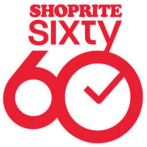

Trade Mark Journal No.2025/014 4 April 2025
UK00004178541 24 March 2025 (35)

- Class 35
- Advertising, marketing and promotional services; retail services connected with the sale of clothing, footwear and headgear, vacuum cleaners, electric blenders, food processors, juice extractors, bathroom furniture, toilet and bathroom cleaning utensils, sanitary and bathroom installations and plumbing fixtures, hairdryers, hot air brushes, electric hair straighteners, electrically operated massagers, foot spas, electric fans, heaters, electric blankets, kettles, toasters, microwaves, coffee machines, cookers, deep fryers, air fryers, bathroom mats, soap dishes, toilet brush holders, toothbrush holders, bed linen and blankets, cushions, pillows, blanket throws hot water bottles, bleach, scented candles, scented oils, air fresheners, basins, buckets, wet scrubbers, brushes, mops, dustpans, household plastic gloves, dishwasher rinsing agents, dishwasher tablets, cleaning agents for household purposes, plastic bin liners, polish, kitchen towels, cloths, insecticides for domestic use, laundry preparations, artificial flowers, artificial plants, candles, storage boxes, mirrors, ornaments, pictures, photo albums, photo frames, sewing kits, luggage, washing lines, clothes pegs, clothes hangers, ironing boards, laundry bins for household purposes, cleaning preparations, kitchen appliances, kitchen implements, cooking appliances, furniture, rugs, carpets, door mats, telephone apparatus and instruments, telephone, mobile telephones and telephone handsets, stationery, books, magazines, periodicals, newspapers, literary material, packaging, printed matter, hammocks, tents and tarpaulins, meat, poultry and game, fruit and vegetables, oils and fats, preserves, pickles, food and drinks, meat, fish, poultry, game, meat extracts, preserved, frozen, dried and cooked fruits and vegetables, jellies, jams, compotes, eggs, milk and milk products, edible oils and fats, dairy products, dairy substitutes, coffee, tea, cocoa and substitutes therefor, rice, pasta and noodles, tapioca and sago, flour and preparations made from cereals, bread, pastries and confectionery, chocolate, ice cream, sorbets and other edible ices, sugar, honey, treacle, yeast, baking-powder, salt, seasonings, spices, preserved herbs, vinegar, sauces and other condiments, ice (frozen water), fresh fruits and vegetables, fresh herbs, natural plants and flowers, bulbs, seedlings and seeds for planting, foodstuffs and beverages for animals, beers, non-alcoholic beverages, mineral and aerated waters, fruit beverages and fruit juices, syrups and other preparations for making non-alcoholic beverages, alcoholic beverages, alcoholic preparations for making beverages, tobacco, smokers' articles, personal toiletries, sanitary preparations, disposable nappies, non-prescription medicines, cosmetics, jewellery and imitation jewellery including clocks and watches, sporting goods and articles, toys, games and playthings, glassware and other tableware, cutlery, home furnishings, goods relating to home decoration, wallpaper, ironmongery, hand tools, garden furniture.
Shoprite Checkers (Proprietary) Limited
Representative: Stobbs